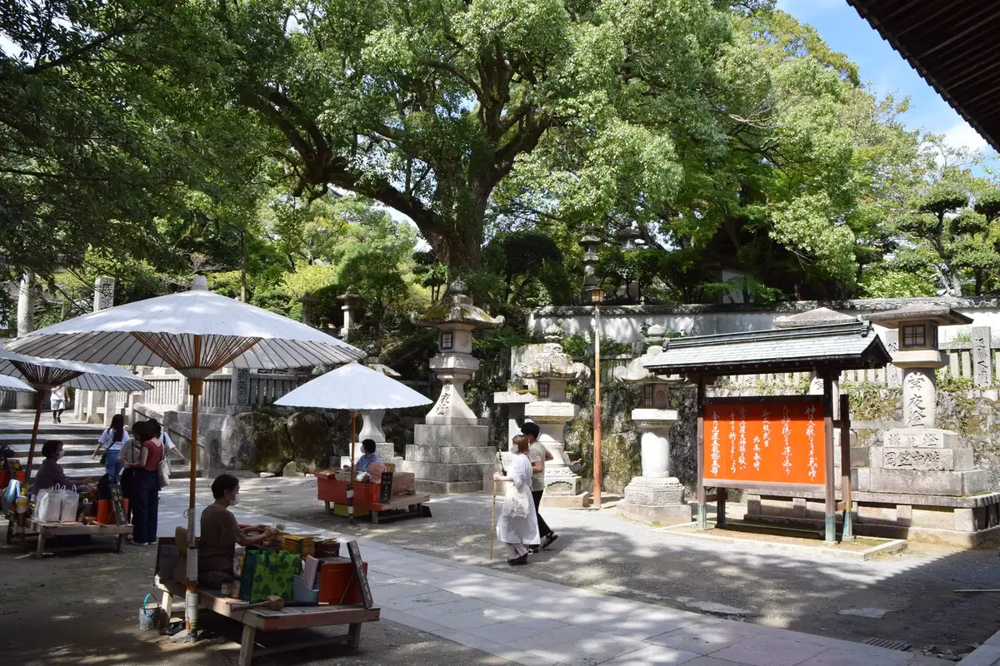
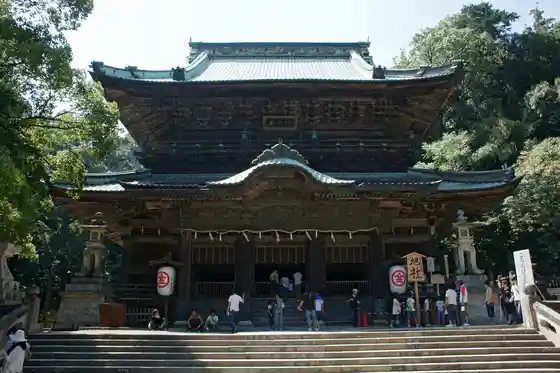
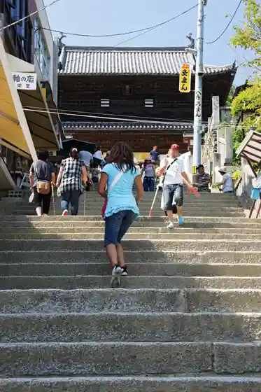
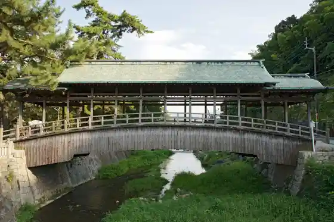
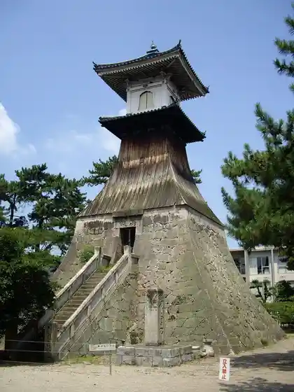

Kotohira
Kotohira · Kagawa
Kotohira
Highlighted on the Kagawa map.

Stay
Kotohira Onsen Onjuku Shikishima Kan
Kotohira Onsen Kon San Kaku
Kotobuki Ryokan
Konpira Onsen Tsuruya Ryokan Josho to Wakaokami no Omotenashi no Yado (Kagawaken)
Konpira Onsen Kotohira Gu Land Hotel Sakura no Sho
Konpira Onsen Kotohira Ribasaido Hotel
Konpira Onsen Kotohira Kadan
Konpira Onsen Kashikiri Yu no Yado Kotone
Konpira Onsen Yumoto Yachiyo
Konpira Town Ie
Konpira Rojiura Yado
Tsunagaru Kafe & Guest House ZouZu
Guest House Nosutarujii
Guest House Kotohira ^
Kotori Kowakingu & Hosuteru Kotohira
San'uerukotohira
Vira Konpira ^
Nete Choshoku no Yado Toki Shirazu
Yumoto Konpira Onsen Hana Baths Kobai Tei
Kon no Yado Chizu 1 to Kashi no Suiito Jun Tennen Onsen to Sauna De Zeitaku Nahitotokiwo ^
Kotohira Park Hotel
Tora Ya Bekkan
Tora Ya Ryokan
GOKAN KOTOHIRA
Hostel Kotohirakurasuka
KOTOVilla
Lien de premier San
NINE STORIES HOTEL
UDON na HOTEL Kotohira
Dining
Taishu Yakiniku Hone Tsuki Tori Kingyu Kotohira Mise
Bimi Tokoro Hisashi &JAPANESE WHISKEY BAR 729
Hidamari Shokudo
cafe Mori to Yama
Yakitori Hone Tsuki Tori Tanaka Ya
Yakiniku Tanaka
Sanuki Meibutsu Hone Tsuki Tori Tanaka Ya
Kasuga Sushi
Kissa Yao
Kobai Tei
Teuchi Chiudon Musashi
Kinryo no Sato
Onsen
Kotohira Onsen Onjuku Shikishima Kan Public Bath
Kotohira Onsen Kon San Kaku Public Bath
Konpira Onsen Tsuruya Ryokan Josho to Wakaokami no Omotenashi no Yado (Kagawaken) Public Bath
Konpira Onsen Kotohira Gu Land Hotel Sakura no Sho Public Bath
Konpira Onsen Kotohira Ribasaido Hotel Public Bath
Konpira Onsen Kotohira Kadan Public Bath
Konpira Onsen Kashikiri Yu no Yado Kotone Public Bath
Konpira Onsen Yumoto Yachiyo Public Bath
San'uerukotohira Public Bath
Yumoto Konpira Onsen Hana Baths Kobai Tei Public Bath
Kotohira Park Hotel Public Bath
UDON na HOTEL Kotohira Public Bath
Experience
Kyu Konpira Oshiba Kyo
Sights
Kotohira Miya
Asahi Sha

Kotohira Miya Omotesando

Saya Hashi

Taka Toro
